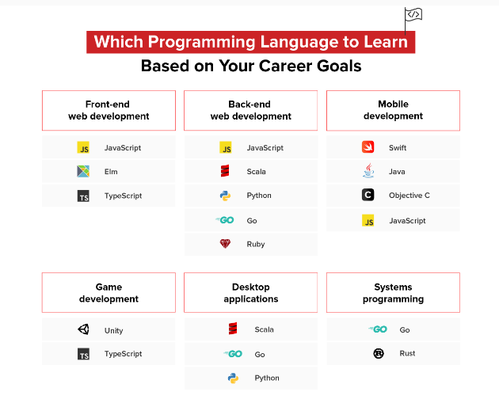

Top 10 programming languages to learn
links:
before you learn any programming language you have to choose you field then look at this image :

1-Javascript
What this language is used for: Web development , Game development ,Mobile apps , Building web servers
2-Python
What this language is used for: Back end development , Data science , App development
3-HTML
What this language is used for: Web documents , Website development , Website maintenance
4-CSS
What this language is used for: Web documents , Website development , Website design
5-Java
What this language is used for: E-commerce , Finance , App development
6-SQL
What this language is used for: Database management , Sales reports , Business management
7-C#
What this language is used for: Game development, Desktop/web/mobile apps , VR
8-Rust
What this language is used for: Operating systems , VR , Web browsers
9-Perl
What this language is used for: System administration , GUI development , Network programming
10-GO
What this language is used for: System/network programming , Audio/video editing , Big Data